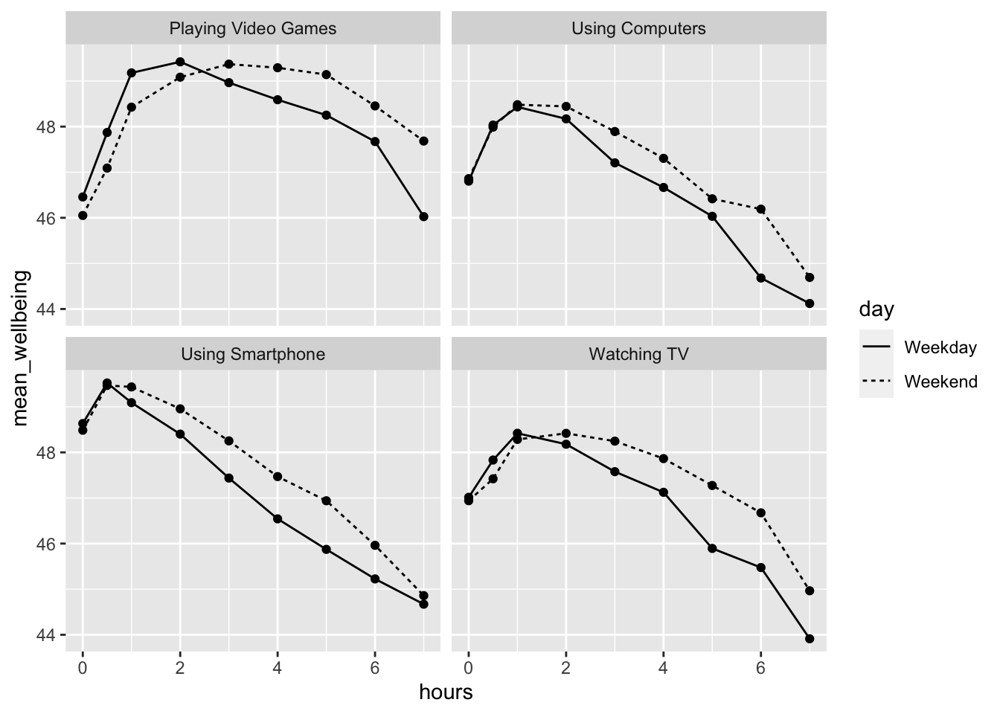

`stat_bin()` using `bins = 30`. Pick better value with `binwidth`.
There is currently much debate (and hype) surrounding smartphones and their effects on well-being, especially with regard to children and teenagers. We’ll be looking at data from this recent study of English adolescents:
Przybylski, A. & Weinstein, N. (2017). A Large-Scale Test of the Goldilocks Hypothesis. Psychological Science, 28, 204–215.
This was a large-scale study that found support for the “Goldilocks” hypothesis among adolescents: that there is a “just right” amount of screen time, such that any amount more or less than this amount is associated with lower well-being. This was a huge survey study: the data contain responses from over 120,000 participants!
Fortunately, the authors made the data from this study openly available, which allows us to dig deeper into their results. In this exercise, we will look at whether the relationship between screen time and well-being is modulated by participants’ (self-reported) gender.
The dependent measure used in the study was the Warwick-Edinburgh Mental Well-Being Scale (WEMWBS). This is a 14-item scale with 5 response categories, summed together to form a single score ranging from 14-70.
At Przybylski & Weinstein’s page for this study on the Open Science Framework, you can find the participant survey which asks a large number of additional questions (see page 14 for the WEMWBS questions and pages 4-5 for the questions about screen time). Within the same page you can also find the raw data; however, for the purpose of this exercise, you will be using local pre-processed copies of the data which we will provide.
Przybylski and Weinstein looked at multiple measures of screen time, but we will be focusing on smartphone use. They found that decrements in well-being started to appear when respondents reported more than one hour of weekly smartphone use. Our question: Does the negative association between hours of use and well-being (beyond the one-hour point) differ for boys and girls?
Note that in this analysis, we have:
a continuous\(^*\) DV, well-being;
a continuous\(^*\) predictor, screen time;
a categorical predictor, gender.
\(^*\)these variables are only quasi-continuous, inasmuch as only discrete values are possible. However, there are a sufficient number of discrete categories that we can treat them as effectively continuous.
We want to estimate two slopes relating screen time to well-being, one for girls and one for boys, and then statistically compare these slopes. So this problem seems simultaneously like a situation where you would run a regression (to estimate the slopes) but also one where you would need a t-test (to compare two groups).
But the expressive power of regression allows us to do this all within a single model. As the Bishop blog showed, an independent groups t-test is just a special case of ordinary regression with a single categorical predictor; ANOVA is just a special case of regression where all predictors are categorical. So although we can express any ANOVA design using regression, the converse is not true: we cannot express every regression design in ANOVA. Regression allows us to have any combination of continuous and categorical predictors in the model. The only inconvenience with running ANOVA models as regression models is that you have to take care in how you numerically code the categorical predictors.
Session - Restart R
pwr, see, performance, report, and tidyverse using the library() function.pinfo, wellbeing and screen using read_csv().Take a look at the resulting tibbles pinfo, wellbeing, and screen. The wellbeing tibble has information from the WEMWBS questionnaire; screen has information about screen time use on weekends (variables ending with we) and weekdays (variables ending with wk) for four types of activities: using a computer (variables starting with Comph; Q10 on the survey), playing video games (variables starting with Comp; Q9 on the survey), using a smartphone (variables starting with Smart; Q11 on the survey) and watching TV (variables starting with Watch; Q8 on the survey). If you want more information about these variables, look at the items 8-11 on pages 4-5 of the the PDF version of the survey on the OSF website.
The variable corresponding to gender is located in the table named and this variable is called .
The WEMWBS data is in format, and contains observations from participants on items.
Individual participants in this dataset are identified by the variable named [be sure to type the name exactly, including capitalization]. This variable will allow us to link information across the three tables.
Run summary() on the three data-sets. Are there any missing data points?
The WEMWBS well-being score is simply the sum of all the items.
wemwbs, with two variables: Serial (the participant ID), and tot_wellbeing, the total WEMWBS score.group_by(); summarise(tot_wellbeing = ...)
Sanity check: Verify for yourself that the scores all fall in the 14-70 range. Przybylski and Weinstein reported a mean of 47.52 with a standard deviation of 9.55. Can you reproduce these values?
tot_wellbeing in a histogram using ggplot2.geom_histogram()The distribution of well-being scores is .
Let’s take a quick look at the relationship between screen time (for the four different technologies) and measures of well-being. Here is code to do this.
%>% as “and then”). You may find it easier to look at each of the tables that are produced.screen_long <- screen %>%
pivot_longer(names_to = "var", values_to = "hours", -Serial) %>%
separate(var, c("variable", "day"), "_")
screen2 <- screen_long %>%
mutate(variable = dplyr::recode(variable,
"Watch" = "Watching TV",
"Comp" = "Playing Video Games",
"Comph" = "Using Computers",
"Smart" = "Using Smartphone"),
day = dplyr::recode(day,
"wk" = "Weekday",
"we" = "Weekend"))
dat_means <- inner_join(wemwbs, screen2, "Serial") %>%
group_by(variable, day, hours) %>%
summarise(mean_wellbeing = mean(tot_wellbeing))
ggplot(dat_means, aes(hours, mean_wellbeing, linetype = day)) +
geom_line() +
geom_point() +
facet_wrap(~variable, nrow = 2)
The graph makes it evident that smartphone use of more than 1 hour per day is associated with increasingly negative well-being. Note that we have combined the tables using an inner_join(), such that we only include data for which we have observations across the wemwbs and screen2 tables.
In the next step, we are going to focus in on the smartphone/well-being relationship.
For this analysis, we are going to collapse weekday and weekend use for smartphones.
smarttot, that has the that has mean number of hours per day of smartphone use for each participant, averaged over weekends/weekdays.serial).Serial (the participant) and tothours.screen2 to do this.filter() then group_by() then summarise()
smart_wb that only includes (filters) participants from smarttot who used a smartphone for more than one hour per day each week, and then combine (join) this table with the information in wemwbs and pinfo.**filter() then inner_join() then another inner_join()
As discussed in the lecture, When you have continuous variables in a regression, it is often sensible to transform them by mean centering. You mean center a predictor X simply by subtracting the mean (X_centered = X - mean(X)). This has two useful consequences:
the model intercept reflects the prediction for \(Y\) at the mean value of the predictor variable, rather than at the zero value of the unscaled variable;
if there are interactions in the model, any lower-order effects can be given the same interpretation as they receive in ANOVA (main effects, rather than simple effects).
For categorical predictors with two levels, these become coded as -.5 and .5 (because the mean of these two values is 0).
mutate to add two new variables to smart_wb: tothours_c, calculated as a mean-centered version of the tothours predictor; and male_c, recoded as -.5 for female and .5 for male.male_c you will need to use if_else(male == 1, .5, -.5) You can read this code as “if the variable male equals 1, recode it as .5, if not, recode it as -.5”.male and male_c as factors, so that R knows not to treat them as a real numbers.male and tothours, and then create a scatterplot plot that includes separate regression lines for each gender.group_by() both variables then summarise()
colour = variable_you_want_different_colours_for
Write an interpretation of the above plot in plain English.
Girls show lower overall well-being compared to boys. In addition, the slope for girls appears more negative than that for boys; the one for boys appears relatively flat. This suggests that the negative association between well-being and smartphone use is stronger for girls.
Now we’re going to see if there is statistical support for our above interpretation of the graph.
For the data in smart_wb, use the lm() function to calculate the multiple regression model:
\(Y_i = \beta_0 + \beta_1 X_{1i} + \beta_2 X_{2i} + \beta_3 X_{3i} + e_i\)
where
Then use summary() to view the results and store this in an object called mod_summary().
y ~ a + b + a:b where a:b means interactionThe interaction between smartphone use and gender is shown by the variable , and this interaction was at the \(\alpha = .05\) level.
To 2 decimal places, what proportion of the variance in well-being scores does the overall model explain?
The p-value for the overall model fit is < 2.2e-16. Is this significant?
What is the most reasonable interpretation of these results?
Now it’s time to test those pesky assumptions. The assumptions for multiple regression are the same as simple regression but there is one additional assumption, that of multicollinearity, the idea that predictor variables should not be too highly correlated.
From the work we’ve done so far we know that assumptions 1 - 4 are met and we can use the functions from the performance package again to check the rest, like we did with the simple linear regression chapter.
One difference from when we used check_model() previously is that rather than just letting it run all the tests it wants, we’re going to specify which tests, to stop it throwing an error. A word of warning - these assumptions tests will take longer than usual to run, because it’s such a big dataset. The first line of code will run the assumption tests and save it to an object, calling the object name will then display the plots.
assumptions <- check_model(mod, check = c("vif", "qq", "normality", "linearity", "homogeneity"))
assumptions
For assumption 5, linearity, we already know from looking at the scatterplot that the relationship is linear, but the residual plot also confirms this.
For assumption 6, normality of residuals, again the residuals look good in both plots and this provides an excellent example of why it’s often better to visualise than rely on statistics because if we use check_normality() which calls the Shapiro-Wilk test:
It tells us that the residuals are not normal, despite the fact that the plots look almost perfect. And that’s because with large sample sizes, any deviation from perfect normality can be flagged as non-normal.
For assumption 7, homoscedasticity, the plot is missing the reference line - fun fact, this took us several days of our lives and asking for help on Twitter to figure out. The reason the line isn’t there is because the dataset is so large that is creates a memory issue so we need to create the plot ourselves using code the developers of the package see provided to us on Twitter. The default code would try to draw confidence intervals around the line which is what causes the memory issue, this code removes that with se = FALSE.
Please note that with most datasets you wouldn’t have to do this extra step, but it’s a good example that when it comes to programming, it doesn’t matter how long you’ve been doing it, there will always be a problem you haven’t come across and that asking for help is part of the process.
ggplot(assumptions$HOMOGENEITY, aes(x, y)) +
geom_point2() +
stat_smooth(
method = "loess",
se = FALSE,
formula = y ~ x,
) +
labs(
title = "Homogeneity of Variance",
subtitle = "Reference line should be flat and horizontal",
y = expression(sqrt("|Std. residuals|")),
x = "Fitted values"
) 
Again like normality, the plot isn’t perfect but it is pretty good and another example of why visualisation is better than running statistical tests as we see the same significant result if we run:
For assumption 8, linearity, again the plot looks fine, and we could also have used the grouped scatterplots above to look at this.
Finally, for assumption 9, multicollinearity, the plot also indicates no issues but we can also test this statistically using check_collinearity().
Essentially, this function estimates how much the variance of a coefficient is “inflated” because of linear dependence with other predictors, i.e., that a predictor isn’t actually adding any unique variance to the model, it’s just really strongly related to other predictors. You can read more about this here. Thankfully, VIF is not affected by large samples like the other tests.
There are various rules of thumb, but most converge on a VIF of above 2 - 2.5 for any one predictor being problematic.
| Term | VIF | VIF_CI_low | VIF_CI_high | SE_factor | Tolerance | Tolerance_CI_low | Tolerance_CI_high |
|---|---|---|---|---|---|---|---|
| thours_c | 1.721968 | 1.704219 | 1.740165 | 1.312238 | 0.5807308 | 0.5746582 | 0.5867789 |
| male_c | 1.035552 | 1.028488 | 1.044369 | 1.017621 | 0.9656682 | 0.9575159 | 0.9723014 |
| thours_c:male_c | 1.716349 | 1.698683 | 1.734463 | 1.310095 | 0.5826319 | 0.5765474 | 0.5886915 |
Finally, we’ll calculate power and effect size as usual.
Same as the simple regression, we can use inline coding or the report() function to help with the write-up. First, copy and paste the below code into white-space and then knit the document. Note that the p-values are entered manually because of the APA p < .001 formatting.
All continuous predictors were mean-centered and deviation coding was used for categorical predictors. The results of the regression indicated that the model significantly predicted course engagement (F(`r mod_summary$fstatistic[2]`, `r mod_summary$fstatistic[3] %>% round(2)`) = `r mod_summary$fstatistic[1] %>% round(2)`, p < .001, Adjusted R2 = `r mod_summary$adj.r.squared %>% round(2)`, f^2^ = .63), accounting for `r (mod_summary$adj.r.squared %>% round(2))*100`% of the variance. Total screen time was a significant negative predictor of wellbeing scores (β = `r mod$coefficients[2] %>% round(2)`, p < .001, as was gender (β = `r mod$coefficients[3] %>% round(2)`, p < .001, with girls having lower wellbeing scores than boys. Importantly, there was a significant interaction between screentime and gender (β = `r mod$coefficients[4] %>% round(2)`, p < .001), smartphone use was more negatively associated with wellbeing for girls than for boys. All continuous predictors were mean-centered and deviation coding was used for categorical predictors. The results of the regression indicated that the model significantly predicted course engagement (F(3, 7.1029^{4}) = 2450.89, p < .001, Adjusted R2 = 0.09, f2 = .63), accounting for 9% of the variance. Total screen time was a significant negative predictor of well-being scores (β = -0.77, p < .001, as was gender (β = 5.14, p < .001, with girls having lower well-being scores than boys. Importantly, there was a significant interaction between screen time and gender (β = 0.45, p < .001), smartphone use was more negatively associated with well-being for girls than for boys.
Now, we can use report() to produce an automated summary. Again, it would need some editing but may be useful to aid interpretation and reporting.
We fitted a linear model (estimated using OLS) to predict tot_wellbeing with
thours_c and male_c (formula: tot_wellbeing ~ thours_c * male_c). The model
explains a statistically significant and weak proportion of variance (R2 =
0.09, F(3, 71029) = 2450.89, p < .001, adj. R2 = 0.09). The model's intercept,
corresponding to thours_c = 0 and male_c = -0.5, is at 44.87 (95% CI [44.78,
44.96], t(71029) = 1001.87, p < .001). Within this model:
- The effect of thours c is statistically significant and negative (beta =
-0.77, 95% CI [-0.82, -0.73], t(71029) = -32.96, p < .001; Std. beta = -0.15,
95% CI [-0.16, -0.15])
- The effect of male c [0.5] is statistically significant and positive (beta =
5.14, 95% CI [5.00, 5.28], t(71029) = 72.25, p < .001; Std. beta = 0.54, 95% CI
[0.52, 0.55])
- The effect of thours c × male c [0.5] is statistically significant and
positive (beta = 0.45, 95% CI [0.38, 0.52], t(71029) = 12.24, p < .001; Std.
beta = 0.09, 95% CI [0.08, 0.11])
Standardized parameters were obtained by fitting the model on a standardized
version of the dataset. 95% Confidence Intervals (CIs) and p-values were
computed using a Wald t-distribution approximation.And you’re done! Not just with this week but with the R component of RM2! The progress that you have made is truly astonishing. Even if you struggled with R and haven’t quite understood every single line of code we’ve shown, what you’re capable of with data wrangling and visualisation alone makes you some of the most highly competitive psychology graduates in the world.
Regardless of whether you continue with quantitative methods and using R, remember the more important critical skills that you have learned as part of this process. The next time you see a dataset or you see data being talked about in the news, think about all work that was put into getting the data into the final format. More importantly, think about all the decisions that the researcher needed to make along the way and how that might have affected the outcome.

smart_wb_gen <- smart_wb %>%
group_by(tothours, male) %>%
summarise(mean_wellbeing = mean(tot_wellbeing))
ggplot(smart_wb_gen, aes(tothours, mean_wellbeing, color = male)) +
geom_point() +
geom_smooth(method = "lm") +
scale_color_discrete(name = "Gender", labels = c("Female", "Male"))+
scale_x_continuous(name = "Total hours smartphone use") +
scale_y_continuous(name = "Mean well-being score")